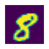

# command to print multiple outputs
from IPython.core.interactiveshell import InteractiveShell
InteractiveShell.ast_node_interactivity = 'all'Welcome back! In this post, we will dive into Fastai’s mid-level API and learn how they help us build custom pipelines & dataloaders with the help of a simple computer vision (CV) example.
The dataset we’ll use is the hello world equivalent of CV called MNIST. Now, there’re various ways to get this data and in fact, fastai provides it as a direct download from its URLs.MNIST attribute but I recently took part in a kaggle competition1 that provided data in an unusual way… one that’s not common enough to load via standard fastai methods. So I thought of making this post to show how that can be done! Let’s go!
Load Data
from fastai.imports import *
from fastai.vision.all import *
Kaggle setup
Kaggle provides a simple API to download (competition) datasets, submit results etc. Simply install it with pip install kaggle. You also need to download an API key fom your kaggle account. It’d download a file called kaggle.json which you can put it under .kaggle (hidden) folder under your home directory, say (~/.kaggle/kaggle.json).
Once done, run chmod 600 ~/.kaggle/kaggle.json to fix permissions and then download the data with its API & unzip it.
!rm -rf data && kaggle competitions download -c digit-recognizer -p data/ && unzip -q data/digit-recognizer.zip -d data/Downloading digit-recognizer.zip to data
91%|██████████████████████████████████▋ | 14.0M/15.3M [00:01<00:00, 16.1MB/s]
100%|██████████████████████████████████████| 15.3M/15.3M [00:01<00:00, 12.5MB/s]path = Path('./data')
Path.BASE_PATH = path
path.ls()(#4) [Path('sample_submission.csv'),Path('digit-recognizer.zip'),Path('train.csv'),Path('test.csv')]train = pd.read_csv(path/'train.csv')
train.shape
train.head()(42000, 785)| label | pixel0 | pixel1 | pixel2 | pixel3 | pixel4 | pixel5 | pixel6 | pixel7 | pixel8 | ... | pixel774 | pixel775 | pixel776 | pixel777 | pixel778 | pixel779 | pixel780 | pixel781 | pixel782 | pixel783 | |
|---|---|---|---|---|---|---|---|---|---|---|---|---|---|---|---|---|---|---|---|---|---|
| 0 | 1 | 0 | 0 | 0 | 0 | 0 | 0 | 0 | 0 | 0 | ... | 0 | 0 | 0 | 0 | 0 | 0 | 0 | 0 | 0 | 0 |
| 1 | 0 | 0 | 0 | 0 | 0 | 0 | 0 | 0 | 0 | 0 | ... | 0 | 0 | 0 | 0 | 0 | 0 | 0 | 0 | 0 | 0 |
| 2 | 1 | 0 | 0 | 0 | 0 | 0 | 0 | 0 | 0 | 0 | ... | 0 | 0 | 0 | 0 | 0 | 0 | 0 | 0 | 0 | 0 |
| 3 | 4 | 0 | 0 | 0 | 0 | 0 | 0 | 0 | 0 | 0 | ... | 0 | 0 | 0 | 0 | 0 | 0 | 0 | 0 | 0 | 0 |
| 4 | 0 | 0 | 0 | 0 | 0 | 0 | 0 | 0 | 0 | 0 | ... | 0 | 0 | 0 | 0 | 0 | 0 | 0 | 0 | 0 | 0 |
5 rows × 785 columns
As you notice, the training data has 785 columns: a label column representing what value that is and each value in the rest of the columns representing a pixel. MNIST data, in general, consists of images of size 28x28, equivalent to 784 pixels laid out as a plain sheet which is what we have here. Now let’s unravel one to see how it looks like!
row = train.loc[0]
row.shape(785,)label, *pixels = row
label, len(pixels)
pixels[:20](1, 784)[0, 0, 0, 0, 0, 0, 0, 0, 0, 0, 0, 0, 0, 0, 0, 0, 0, 0, 0, 0]So the label says that the image is that of number 1. Let’s rearrange the pixels into a square of size 28x28 array.
arr_pixels = np.array(pixels).reshape(-1, 28)
arr_pixels[:10]array([[ 0, 0, 0, 0, 0, 0, 0, 0, 0, 0, 0, 0, 0,
0, 0, 0, 0, 0, 0, 0, 0, 0, 0, 0, 0, 0,
0, 0],
[ 0, 0, 0, 0, 0, 0, 0, 0, 0, 0, 0, 0, 0,
0, 0, 0, 0, 0, 0, 0, 0, 0, 0, 0, 0, 0,
0, 0],
[ 0, 0, 0, 0, 0, 0, 0, 0, 0, 0, 0, 0, 0,
0, 0, 0, 0, 0, 0, 0, 0, 0, 0, 0, 0, 0,
0, 0],
[ 0, 0, 0, 0, 0, 0, 0, 0, 0, 0, 0, 0, 0,
0, 0, 0, 0, 0, 0, 0, 0, 0, 0, 0, 0, 0,
0, 0],
[ 0, 0, 0, 0, 0, 0, 0, 0, 0, 0, 0, 0, 0,
0, 0, 0, 0, 0, 0, 0, 188, 255, 94, 0, 0, 0,
0, 0],
[ 0, 0, 0, 0, 0, 0, 0, 0, 0, 0, 0, 0, 0,
0, 0, 0, 0, 0, 0, 191, 250, 253, 93, 0, 0, 0,
0, 0],
[ 0, 0, 0, 0, 0, 0, 0, 0, 0, 0, 0, 0, 0,
0, 0, 0, 0, 0, 123, 248, 253, 167, 10, 0, 0, 0,
0, 0],
[ 0, 0, 0, 0, 0, 0, 0, 0, 0, 0, 0, 0, 0,
0, 0, 0, 0, 80, 247, 253, 208, 13, 0, 0, 0, 0,
0, 0],
[ 0, 0, 0, 0, 0, 0, 0, 0, 0, 0, 0, 0, 0,
0, 0, 0, 29, 207, 253, 235, 77, 0, 0, 0, 0, 0,
0, 0],
[ 0, 0, 0, 0, 0, 0, 0, 0, 0, 0, 0, 0, 0,
0, 0, 54, 209, 253, 253, 88, 0, 0, 0, 0, 0, 0,
0, 0]])Hmm… now we see some numbers. Let’s convert that to an image!
show_image(arr_pixels);
Cool! Notice that the image of the label is 1 as expected. :)
Now, let’s convert all the data into 28x28 array.
# reshape the data into square images
arr = train.drop('label', axis=1).values.reshape(-1, 28, 28).astype(np.uint8)
arr.shape(42000, 28, 28)Let’s pick a random image to check!
show_image(arr[1234]);
peek into mid-level API
ImageDataLoaders.from_*?ImageDataLoaders.from_csv
ImageDataLoaders.from_dblock
ImageDataLoaders.from_df
ImageDataLoaders.from_dsets
ImageDataLoaders.from_folder
ImageDataLoaders.from_lists
ImageDataLoaders.from_name_func
ImageDataLoaders.from_name_re
ImageDataLoaders.from_path_func
ImageDataLoaders.from_path_reTransforms
The image data is in the form of an array and the labels as a column in a dataframe. I couldn’t find a way to load that using the standard DataBlock API as shown in my face mask detection post right out of the way we have it (i.e., data not being stored on disk). Perhaps one can convert each row from a 784 array to a 28x28 matrix, store it as an image in a column and then load it using one of the ImageDataLoaders methods as shown above. But that sounds a bit more hacky to me compared to the elegant ways Transforms provides.
Transform is a class that one can inherit from and it has 3 main methods to implement.
encodestakes an item and transforms our data into the way we want (our custom transformation)setupsis an optional method that sets the inner state, if there’s anydecodeswhich is an optional step too that acts as (near) opposite toencodes. It tries to undo the operations performed inencodes, if and when possible.
Here’s a simple example from one of the lessons in fastai:
class NormalizeMean(Transform):
def setups(self, items): self.mean = sum(items)/len(items)
def encodes(self, x): return x-self.mean
def decodes(self, x): return x+self.meanHere, setups stores the inner state of the passed items i.e., the mean, encodes returns the data with the mean subtracted and decodes returns the data with the mean added (opposite of encodes).
# initialize
nm = NormalizeMean()
nmNormalizeMean:
encodes: (object,object) -> encodes
decodes: (object,object) -> decodesnm.setup([1, 2, 3, 4, 5])nm.mean3.0nm(2)-1.0nm.decode(2)5.0Using this, let’s see how an image can be obtained from an array of pixels! The idea is to pass one row of our training data and get an image & a label in return…
train.head()| label | pixel0 | pixel1 | pixel2 | pixel3 | pixel4 | pixel5 | pixel6 | pixel7 | pixel8 | ... | pixel774 | pixel775 | pixel776 | pixel777 | pixel778 | pixel779 | pixel780 | pixel781 | pixel782 | pixel783 | |
|---|---|---|---|---|---|---|---|---|---|---|---|---|---|---|---|---|---|---|---|---|---|
| 0 | 1 | 0 | 0 | 0 | 0 | 0 | 0 | 0 | 0 | 0 | ... | 0 | 0 | 0 | 0 | 0 | 0 | 0 | 0 | 0 | 0 |
| 1 | 0 | 0 | 0 | 0 | 0 | 0 | 0 | 0 | 0 | 0 | ... | 0 | 0 | 0 | 0 | 0 | 0 | 0 | 0 | 0 | 0 |
| 2 | 1 | 0 | 0 | 0 | 0 | 0 | 0 | 0 | 0 | 0 | ... | 0 | 0 | 0 | 0 | 0 | 0 | 0 | 0 | 0 | 0 |
| 3 | 4 | 0 | 0 | 0 | 0 | 0 | 0 | 0 | 0 | 0 | ... | 0 | 0 | 0 | 0 | 0 | 0 | 0 | 0 | 0 | 0 |
| 4 | 0 | 0 | 0 | 0 | 0 | 0 | 0 | 0 | 0 | 0 | ... | 0 | 0 | 0 | 0 | 0 | 0 | 0 | 0 | 0 | 0 |
5 rows × 785 columns
xx = train.loc[0][1:].values.reshape(-1, 28).astype(np.uint8)
xx.shape
show_image(xx);
Let’s write the same as a transform that can run on all the datapoints.
class Convert_to_image(Transform):
def encodes(self, x):
mat = x[1:].reshape(-1, 28).astype(np.uint8)
return PILImage.create(mat)In our case, we don’t need to maintain any inner state, hence the setups method was skipped. Also there’s no need to revert to the original array state (although one can) and therefore the decodes method too was skipped.
Let’s test this by taking a sample row from our training dataset.
row = train.values[10]
row.shape(785,)c2i = Convert_to_image()
c2i(row)Yay! Now we have an image. Let’s also extract the label out of the same data, which is the first value in the array…
class Extract_label(Transform):
def encodes(self, x):
return x[0]el = Extract_label()
el(row)8Sweet!
Pipelines
Now in order to construct our dataloaders, we still need to run a few more transformations on our independent & dependent variables such as converting the data to a tensor to take advantage of GPU etc. Pipeline helps us build a list of transformations to run on our data sequentially. Let’s compose two pipelines: one that acts on our dependent data (i.e., images) and another on our independent data (i.e., labels).
x_pipe = Pipeline([Convert_to_image, ToTensor])
y_pipe = Pipeline([Extract_label, Categorize(vocab=train.label.unique())])For our dependent data, first Convert_to_image was run, which takes a row from the dataframe, extract our pixel array, reshapes, converts that to a matrix and then to an image. Later it was converted to a tensor with a ToTensor built-in transformation.
For our independent data, the label was first extracted as defined in the Extract_label transform above and later converted to a Category that we want to predict using Categorize built-in transformation. The total possible labels that can be predicted was passed to the vocab (stands for vocabulary) parameter.
Now let’s run the pipeline to see what we get!
show_image(x_pipe(row));
y_pipe(row)TensorCategory(8)Nice! We’re now ready to construct our dataloaders.
Custom Datasets & DataLoaders
To construct dataloaders, a Datasets object needs to be created which takes raw data and can apply multiple pipelines in parallel. This wil be used to run our independent & dependent data piplines together. Optionally the parameter splits can be specified using one of the Splitter transforms, in this case a RandomSplitter which returns training & validation indices extracted from our raw dataset.
As we see, most of the functions that’re used regularly in fastai are actually transformations itself. :)
splits = RandomSplitter(valid_pct=.2)(np.arange(train.shape[0]))dsets = Datasets(train.values, [x_pipe, y_pipe], splits=splits)with the Datasets object now obtained, we construct DataLoaders object by simply calling .dataloaders on it. Since we are not collecting data from disk, we don’t have to specify the path and can optionally set a batch_size with bs. As these are just 28x28 images, we can set a bigger batch size.
dls = dsets.dataloaders(bs=512)len(dls.train.items), len(dls.valid.items)(33600, 8400)dls.train.show_batch()
dls.valid.show_batch()
Finally! We have come a long way extracting the raw data from a dataframe to be able to construct a dataloaders object with image as our dependent datablock and category as our indenpendent datablock!
Train
You can now use this data to train using fastai’s vision_learner method!
import warnings
warnings.filterwarnings('ignore')learner = vision_learner(dls, resnet18, metrics=accuracy).to_fp16()learner.lr_find()SuggestedLRs(valley=0.0020892962347716093)
learner.fine_tune(5, 5e-2)| epoch | train_loss | valid_loss | accuracy | time |
|---|---|---|---|---|
| 0 | 0.755852 | 0.339413 | 0.915119 | 00:06 |
| epoch | train_loss | valid_loss | accuracy | time |
|---|---|---|---|---|
| 0 | 0.119606 | 0.081445 | 0.981310 | 00:07 |
| 1 | 0.092199 | 0.080963 | 0.983571 | 00:07 |
| 2 | 0.054804 | 0.051717 | 0.986905 | 00:07 |
| 3 | 0.029896 | 0.037651 | 0.991667 | 00:07 |
| 4 | 0.015221 | 0.032806 | 0.992500 | 00:07 |
a near 100% accuracy on the validation set 🎉
interp = ClassificationInterpretation.from_learner(learner)interp.plot_confusion_matrix()
That’s it for today! Fastai’s mid-level API offers much more functionality and we barely scratched the surface. Hope it inspires you to learn further and take advantage of this powerful feature. Head to the docs to learn more. Thanks for reading :)
References
AstroDave, Will Cukierski. 2012. “Digit Recognizer.” Kaggle. https://kaggle.com/competitions/digit-recognizer.